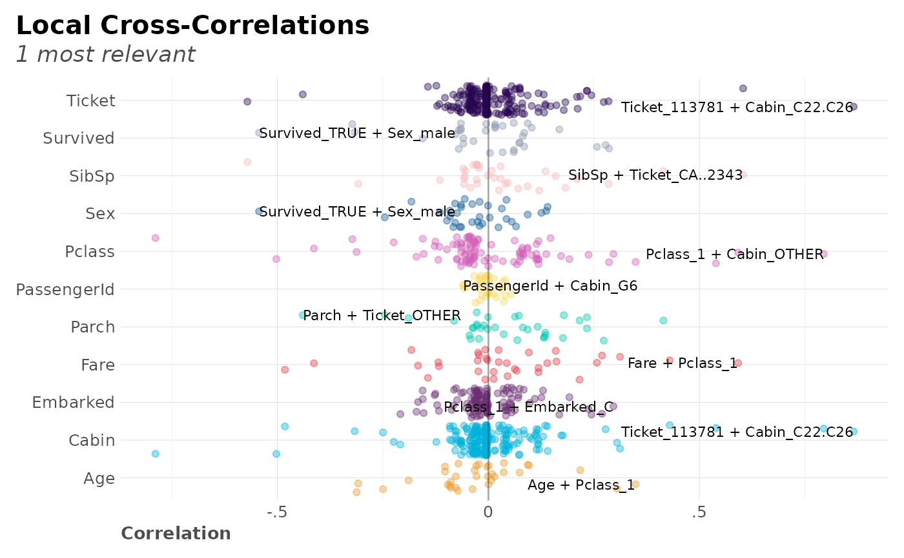
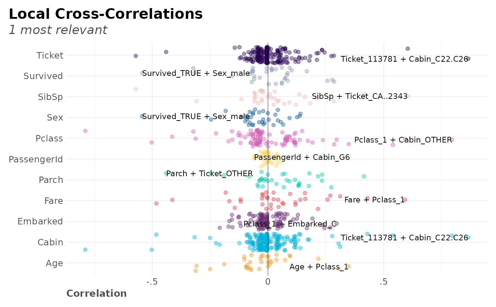

This function creates a correlation full study and returns a rank of the highest correlation variables obtained in a cross-table.
Usage
corr_cross(
df,
plot = TRUE,
pvalue = TRUE,
max_pvalue = 1,
type = 1,
max = 1,
top = 20,
local = 1,
ignore = NULL,
contains = NA,
grid = TRUE,
rm.na = FALSE,
quiet = FALSE,
...
)Arguments
- df
Dataframe. It doesn't matter if it's got non-numerical columns: they will be filtered.
- plot
Boolean. Show and return a plot?
- pvalue
Boolean. Returns a list, with correlations and statistical significance (p-value) for each value.
- max_pvalue
Numeric. Filter non-significant variables. Range (0, 1]
- type
Integer. Plot type. 1 is for overall rank. 2 is for local rank.
- max
Numeric. Maximum correlation permitted (from 0 to 1)
- top
Integer. Return top n results only. Only valid when type = 1. Set value to NA to use all cross-correlations
- local
Integer. Label top n local correlations. Only valid when type = 2
- ignore
Vector or character. Which column should be ignored?
- contains
Character vector. Filter cross-correlations with variables that contains certain strings (using any value if vector used).
- grid
Boolean. Separate into grids?
- rm.na
Boolean. Remove NAs?
- quiet
Boolean. Keep quiet? If not, informative messages will be shown.
- ...
Additional parameters passed to
corr
Value
Depending on input plot, we get correlation and p-value results for
every combination of features, arranged by descending absolute correlation value,
with a data.frame plot = FALSE or plot plot = TRUE.
Details
DataScience+ Post: Find Insights with Ranked Cross-Correlations
See also
Other Correlations:
corr(),
corr_var()
Other Exploratory:
corr_var(),
crosstab(),
df_str(),
distr(),
freqs(),
freqs_df(),
freqs_list(),
freqs_plot(),
lasso_vars(),
missingness(),
plot_cats(),
plot_df(),
plot_nums(),
tree_var()
Examples
Sys.unsetenv("LARES_FONT") # Temporal
data(dft) # Titanic dataset
# Only data with no plot
corr_cross(dft, plot = FALSE, top = 10)
#> Returning only the top 10. You may override with the 'top' argument
#> # A tibble: 10 × 8
#> # Rowwise:
#> key mix corr pvalue group1 cat1 group2 cat2
#> <chr> <chr> <dbl> <dbl> <chr> <chr> <chr> <chr>
#> 1 Ticket_113781 Cabin_C22.C26 0.866 3.35e-269 Ticket 113781 Cabin "C22.C…
#> 2 Pclass_1 Cabin_OTHER 0.795 4.58e-195 Pclass 1 Cabin "OTHER"
#> 3 Pclass_1 Cabin_ -0.789 4.39e-190 Pclass 1 Cabin ""
#> 4 SibSp Ticket_CA..2343 0.604 1.40e- 89 SibSp SibSp Ticket "CA..2…
#> 5 Fare Pclass_1 0.592 2.87e- 85 Fare Fare Pclass "1"
#> 6 SibSp Ticket_OTHER -0.571 3.37e- 78 SibSp SibSp Ticket "OTHER"
#> 7 Survived_TRUE Sex_male -0.543 1.41e- 69 Survived TRUE Sex "male"
#> 8 Pclass_3 Cabin_ 0.539 2.25e- 68 Pclass 3 Cabin ""
#> 9 Pclass_3 Cabin_OTHER -0.502 3.94e- 58 Pclass 3 Cabin "OTHER"
#> 10 Fare Cabin_ -0.482 4.85e- 53 Fare Fare Cabin ""
# Show only most relevant results filtered by pvalue
corr_cross(dft, rm.na = TRUE, max_pvalue = 0.05, top = 15)
#> Returning only the top 15. You may override with the 'top' argument
 # Cross-Correlation for certain variables
corr_cross(dft, contains = c("Survived", "Fare"))
#> Returning only the top 20. You may override with the 'top' argument
# Cross-Correlation for certain variables
corr_cross(dft, contains = c("Survived", "Fare"))
#> Returning only the top 20. You may override with the 'top' argument
 # Cross-Correlation max values per category
corr_cross(dft, type = 2, top = NA)

# Cross-Correlation max values per category
corr_cross(dft, type = 2, top = NA)
